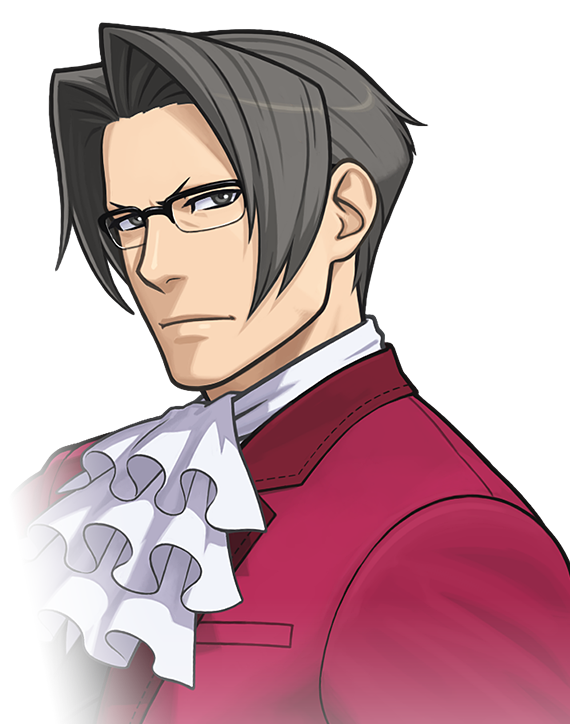
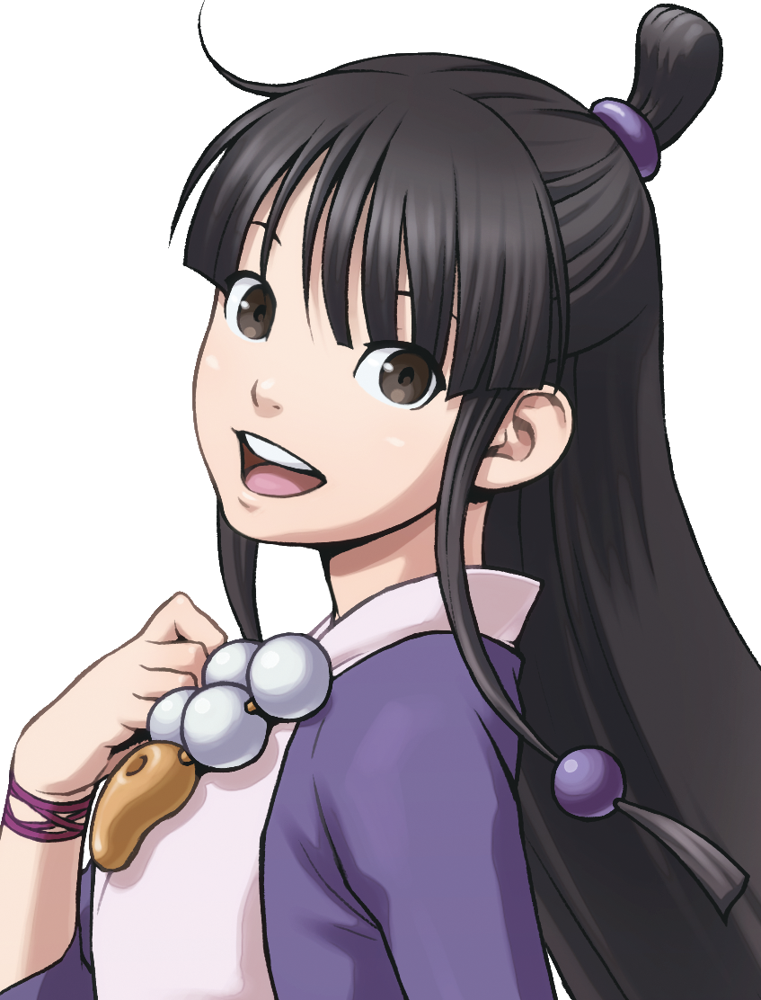
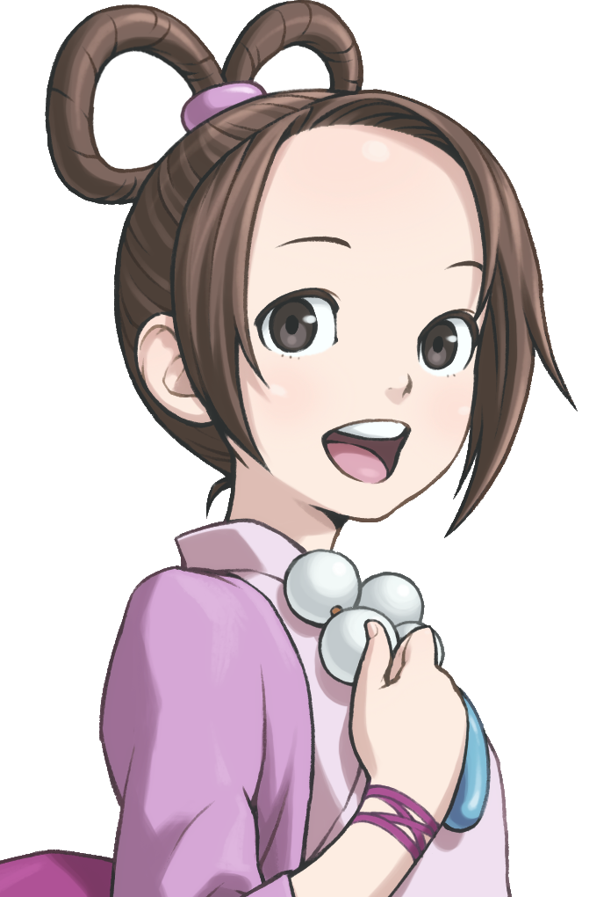
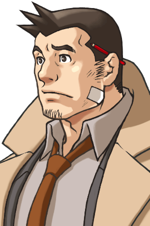
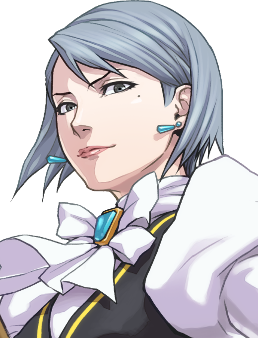

Здесь описаны основные персонажи трилогии, часто появляющиеся в 3-х играх и(или) играющие очень важную роль.
Майлз Эджворт
Майлз Эджворт — генеральный прокурор. В течение первых четырёх лет службы он добился идеального рекорда в судебных процессах будучи готовыми сделать практически всё, для получения обвинительного приговора. Его поражение в суде от руки его друга детства Феникса Райта послужило основой для пересмотра взглядов на его работу. Он даже бросал её дважды, в конечном итоге вновь возвращаясь с новым взглядом на то, как он вёл свою жизнь. К моменту проведения дела Маска☆ДеМаска он стал международным прокурором и стал работать в пяти других странах, а также стал известен как генеральный прокурор на своей родине. Его цель в качестве прокурора состоит в том, чтобы искать правду и использовать силу закона для спасения людей.
Майя Фей
Майя Фей — мастер техники призыва духов деревни Кураин и, впоследствии, глава клана Фей. Близкий друг адвоката защиты Феникса Райта, а также его главный помощник в течение большей части карьеры между 2016 и 2019 годами, в основном за счёт участия в его расследованиях и предоставления совместных консультационных обязанностей в судебных процессах. Майя известна тем, что оказывалась клиентом Феникса наибольшее количество раз за всю историю агентства Райта.
Мия Фей

Мия Фей — адвокат, известная своей бессмертной верой в своих клиентов. Она отправилась в юридическое бюро Гроссберга, а затем создала свою собственную юридическую контору по уголовной защите, Бюро «Фей и Ко». Она была боссом и наставником Феникса Райта, и она оставила ему свою контору после её смерти от рук Редда Уайта.
Пёрл Фей
Пёрл Фей — член ветви семьи клана Фей. Она дочь Морган Фей, которая проиграла свои права на титул мастера своей младшей сестре Мисти. Пёрл - вундеркинд среди спиритических медиумов, обладающий "интенсивной духовной силой", а также обладающий знаниями о клане Фей, которые превосходят знания дочери Мисти Майи, которая, как ожидается, примет титул мастера.
Эма Скай
Эма Скай — это судмедэксперт из управления по уголовным делам Лос Анджелеса, которая была инспектором при первых делах Аполло Джастиса(персонаж из дальшейших игр Ace Attorney). Ещё в подростковом возрасте работала совместно с Фениксом Райтом и выступала как помощник адвокат в Возрождающемся повороте и помогала Майлзу Эджворту в нескольких его делах.
Дик Гамшу
Дик Гамшу — инспектор полицейского управления, расследующий убийства. Он отвечал за большинство дел, которые брал Феникс Райт, в основном из-за того, что большинство дел Райта предоставляют его коллегам-прокурорам Гамшу. Обычно он берет на себя предварительное расследование и первым встает за стойку свидетеля на суде, давая показания и излагая основные факты по делу. Иногда он помогал Райту, в зависимости от обстоятельств дела.
Франциска фон Карма
Франциска фон Карма является прокурором и дочерью покойного прокурора Манфреда фон Кармы. В качестве прокурора она принимала участие в большинстве дел Феникса Райта с июня 2017-ого до марта 2018 года, а также была ведущим прокурором в суде над Айрис из храма Хадзакура.Ей нравится использовать слова «дурак» и «глупый» (а также их различные обороты и словосочетания) по отношению к людям, которые, по ее мнению, хуже нее. Также известно, что она всегда носит с собой кнут (она занималась верховой ездой когда была младше), который она зачастую использует на тех, кто ее так или иначе провоцирует.